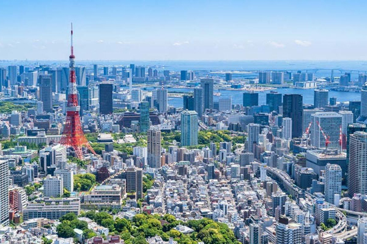

Curiosidades

Por que as Olimpíadas de Tokyo-2020 é realizada em 2021?
Leia Mais...
Confira algumas curiosidades sobre a cidade de Tóquio!
Leia Mais...
Você sabia que alguns atletas olímpicos se inspiram em mangás?
Leia Mais...
Qual o significado da tocha e da pira olímpica?
Leia Mais...
As medalhas foram confeccionadas com material reciclável!
Leia Mais...
Foram utilizados 1.824 drones na cerimônia de abertura!
Leia Mais...
Confira abaixo alguns vídeos: